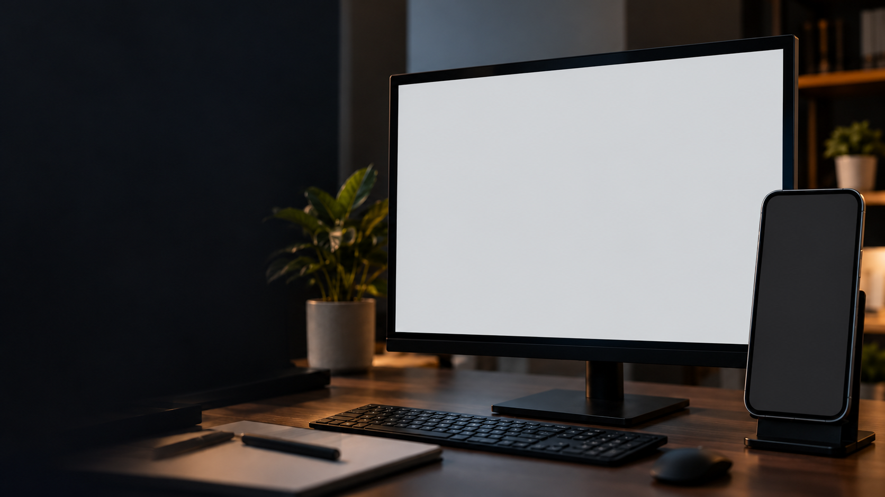

그 자리에서 바로 기능 변경
메뉴로 오갈 필요 없이
마우스 버튼과 휠, 그리고 Ctrl·Alt 조합으로
바로바로 기능을 바꾸세요.
01 · 마우스로 편하게, 스마트폰으로 자유롭게
마우스 버튼과 휠로 판서 도구를 바꾸고,
스마트폰으로 녹화 제어와 손글씨 입력까지.
Windows용 · 실제 프로그램 및 스마트폰 화면 사용



메뉴로 오갈 필요 없이
마우스 버튼과 휠, 그리고 Ctrl·Alt 조합으로
바로바로 기능을 바꾸세요.
녹화 제어부터 펜의 모든 기능과 터치펜 손글씨까지.
스마트폰으로 조작해 보세요.
다양한 프레임과 자동 배경 제거, 아바타 기능까지.
웹캠 화면을 녹화 영상에 함께 담아보세요.
펜 아이콘을 선택하고 마우스 왼쪽 버튼으로 부드럽게 그릴 수 있습니다.


앱을 설치하지 않습니다. 모니터 한 대로 전체 화면을 녹화할 때, 강의나 발표 중에 특히 편합니다.
PC와 스마트폰이 같은 공유기(Wi-Fi)에 연결되어 있어야 합니다.


웹캠이나 스마트폰 카메라를 녹화 영역 안에 자유롭게 띄우고 원하는 위치에 배치합니다.
얼굴 노출이 부담스러울 땐 클릭 한 번으로 나만의 3D 아바타를 소환해 생생한 제스처로 설명합니다.
복잡한 장비 없이 원클릭으로 배경을 깔끔하게 지우고, 윤곽과 경계를 부드럽게 실시간 합성합니다.
각 기능별 실제 프로그램 화면과 상세 설명이 1:1로 매칭되어 있어 원하는 조작법을 쉽고 빠르게 익힐 수 있습니다.

1280 × 720) 부분을 더블클릭하면 숫자를 직접 입력(예: 1920, 1080)하여 즉시 정확한 크기로 변경할 수 있습니다.


00:00:00), 실시간 프레임레이트(FPS), 녹화 파일 실시간 누적 용량(MB) 표시.


hevc_nvenc: NVIDIA GPU 가속 H.265/HEVC (최고 권장, 초저지연/고화질)h264_nvenc: NVIDIA GPU 가속 H.264libx264: CPU 기반 표준 H.264 코덱


핵심 기능들을 단축키로 커스텀 설정할 수 있습니다. 입력칸을 클릭한 후 단축키를 눌러 입력하고 X를 누르면 삭제됩니다.

X 버튼으로 삭제 가능합니다.

아무것도 안 함 / 프로그램 종료 / 시스템 절전 / 시스템 종료 (PC 꺼짐)Windows의 파란색 보호 창이 나타나면 이렇게 실행합니다.
단축키 하나로 시작하는 고화질 4K 화면 녹화, 실시간 판서, 그리고 스마트폰 무선 연동까지.
지니캠 프로와 함께 작업 효율을 극대화해 보세요.